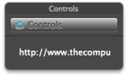

Lightning Link 3.0 for Mac OS X
DownloadDownload 2.5 for Snow Leopard
Features so far:
New in this version:
- Optimized for Mac OS X 10.7
- Full screen option
- Updated, and cleaner color scheme and interface
- Hide and Customize toolbar options in Window menu
- Keyboard shorcuts for text-to-speech
- New application icon
- New DMG design
- New icons for some buttons
- Hiding the HUD now actually hides the HUD instead of minimizing
- Updated "ReadMe" file
- New help window
- Compressed as a ZIP
- Updated website info
- Fixed background so the white color stays the same while loading sites
- New hide/show pop-up menu for the HUD
- New icon
- All-in-one control is now in the HUD
- New DMG design
- Help menu with menu search
- New colored background
- New all-in-one control menu
- Flexible space toolbar separators
- New external navigation pane look
- New URL bar
- Resolved an issue with the page reloading after clicking off the URL bar
- The external navigation panel is back
- The external control panel is now resizable
- A customize button can be added to the toolbar
- The (CC Beta) title is removed along with other unneeded menus
- Unlimited window resize
- Keyboard shortcuts
- Text-to-speech
- Text resizing
- Support for system wide plugins, such as: QuickTime, Flash, and Shockwave
- 64 Bit
Lightning Link is a lightweight, single window, web browser for Mac OS X.